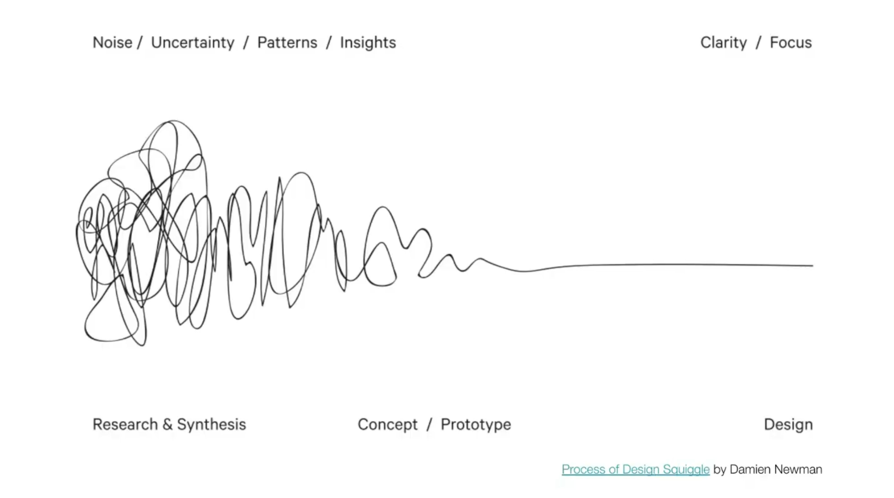
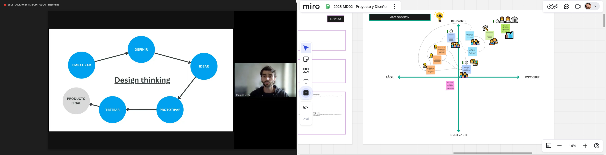
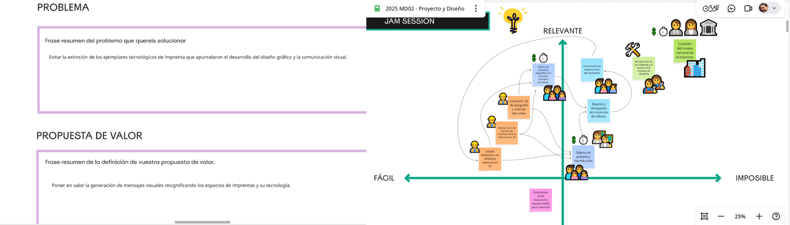
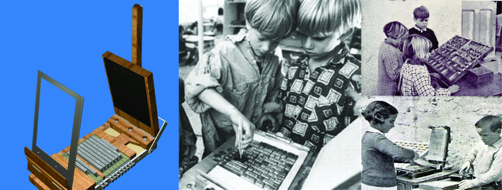
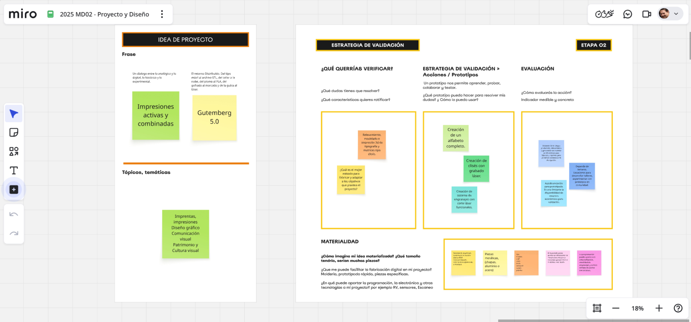

MD02¶
Proyecto y diseño

Arrancamos el modulo, “Pensar diseño” poner en valor, bajar a tierra las ideas, con queien, para quienes, como, porqué. La aconstrución de una propuesta tangible es el diesfío de este modulo. Empezamos con un ejercicio en la plataforma miro.
https://miro.com/app/board/uXjVJ0RGljI=/
En las presentaciones de Joaquin y Santiago nos dejan trampolines instalados en palabras y frases claves, generar conciencia, validar proyectos, empoderar a la comunidad. Aspectos que ayudan a consolidar las estrategias y deben desembocar en acciones concretas.

La propuesta transitara por generar en 3d los elementos que permiten la interacción con distintos publicos objetivos. en una primera instancia la estrategia es el trabajo con niños en edad de aprendizaje del alfabeto y secuencia numerica. en modalidad de taller que puede ser en escuelas, en el local en un local de imprenta o en liceos.

Asi como en otros paises, solo la prespectiva de los profesionales del diseño gráfico y la comunicación visual son sensibles a la preservación de un estilo tipografico, desde la rotulación al manejo de la composición de pagina con tipos de plomo, esta la identidad de una cultra grafica. Es alli donde se origina este proyecto y tiene la responsabilidad de inocular en la sociedad un interes cultural casi inexistente.
Recientemente en el ciclo de charlas Herederos de la Letra organizado por Leyendatype en colaboracion con el DG Faio Ares, se compartieron experiencia de recuperacion inventariado espesifica de tipografia, aunque es una practica disciplinar concreta, todo las experiencia tiene como origen una preocupacion individual con gran aceptación comunitaria.
Ejemplos como el del diseñador Carlos Campos Verdu y la recuperacion digital del patrimonio gráfico Andaluz en España, o la del diseñador Diego Crescimbeni y gustavo ferrari con el fileteado y nuestro arte como un gesto solidario en las paradas de los micro buses de Buenos Aires.
Estas iniciativas lograron poner a dispoción de las personas una práctica espesifica con un sentido funcional que ademas ponen en valor la identidad gràfica local y permite impulsar emprendimientos de diseño de fuentes tipograficas con valor histórico vernaculo.
En el 2020 Junto al Colega Daniel Silverman de la facultad de arte y diseño (FAD) de la Universidad Provincial de Cordoba, presentamos en la sexta Jornada del Diseño del Libro, un proyecto de rescate patrimonial de la primera imprenta de Cordoba, fue con Daniel que hice la priemera aporximaciòn al prototipo de imprenta a escala, que luego convertimos en un prototipo modelado e impreso en 3d.
https://youtu.be/21GW-XR0-wo?si=vz8QUwyHANechi4z
Basados en la trayectoria de trabajos realizados desde 2018 hasta hoy es que este nuevo enfoque propone una estrategia que fuciona tecnología de fabricación 3d con practicas de impresión directa y diseño de mensajes visuales para empoderar a las comunidades. Similar a como lo hacia la tecnica pedagogica de imprenta escolar Freinet.
https://www.youtube.com/watch?v=6rXmo9XB330&t=4s

Metodologia
Relevar y redibujar tipografías usadas en los talleres de imprenta.Vectorizar alfabetos escaneados de impresos o de tipos de plomo y convertirlos en clises modelados en 3d Diseñar mecanimos de transferencia artesanal para niño.
Relevar y reproducir sistemas mecánicos de tranferencia mecánica por presión con una escala portatil que permita imprimir usando clises diseñados e impresos en 3d, laser o frezado. Gestionar encuentros en modalidad talleres para experimentar con los prototipos y ajustar el diseño.
Registrar y publicar el proceso y actividades. Las ideas macro mas ambiciosas son la recuperacion del lugar, de las maquinas que existen en CeReMOS y finalmente la creacion del museo nacional de la imprenta.
Segunda parte del ejercicio:
https://miro.com/app/board/uXjVJ0RGljI=/
Proponer un nombre para el proyecto y cerrar el enfoque para trazar un camino viable sin dejar de lado el marco macro, o la ambicion maxima que nos gustaria alcanzar. Dos caracteristicas ordenan las acciones, Idea de proyecto y estrategia de validación.
Como nombres posibles propongo:
Impresiones activas y combinadas un dialogo entre lo analógico y lo digital, lo histórico y lo experimental.
Gutemberg 5.0 el retorno distribuido, del tipo móvil al archivo stl, del taller a la nube, del plomo al PLA, del gofrado al marcado y de la gubia al laser.
Acá les dejo una charla con mi amigo de la IA sobre la busqueda del nombre del proyecto.
Dentro de las acciones a corto plazo selecione el relevamiento, modelado e impresión de tipografía y matrices tipo clisé. dejamos abierto verificar ¿cual es el método mas adecuado para fabricar y adaptar a los objetivos que plantea el proyecto?
Crear un alfabeto completo de 64 glifos para imprimir en 3d o grabar en láser, y diseñar un modelo funcional que replique el sistema de torculo con engranajes cortados con laser fabricados en madera.
Para la evaluación propuse medir lo que depende estrictamente de mis acciones individuales. Las tareas que dependen de la participacion de terceros y estan sugetos a disponiblidad externa. el otro aspecto es la autofinanciacion para prototipar que estimo entre 150 y 200 dolares entre fiflamentos y placas de maderas.

Referencias
Museo Tipografía Pao de Sto. Antonio http://www.museutipografia.com.br Utsch, A. (2015). Patrimônio Gráfico entre ação e preservação, Museo tipografíaPão de Sto. Antônio, Minas Gerais, Brasil
Museo Nacional de la Imprenta Irlandesa.National Print Museum https://www.nationalprintmuseum.ie/about/history/
Caja Baja, taller dedicado a la impresión con métodos de impresión directa https://cajabaja.com.uy/
Buena letra: Taller dedicado a la caligrafía, producción de grabados y reproducción con impresión directa. https://buenaletra.shop/
Espacio museo del periódico semanal El Pueblo, ciudad de Santa Lucía, Canelones https://semanarioelpueblo.com.uy/
Película: Los Últimos, de Pablo Pivetta y Nicolas Rodriguez Fuchs, 2019. La película se financió parcialmente mediante una campaña de crowdfunding, complementada con autogestión de los directores. https://www.youtube.com/watch?v=J4b9kK9fmgw
Escuela de Industrias Gráficas de UTU https://escuelaindustriasgraficas.utu.edu.uy/ Recuperó y preserva en uso una colección de prensas tipográficas y linotipia. Aún mantiene la enseñanza de tipografía en la plantilla curricular del bachillerato tecnológico de Técnico Impresor.
Taller de imprenta del Hospital de Clínicas,presentacion internacional 2021, y exposición en el marco del Día del Patrimonio 2021 y en FADU la Noche de los Museos del mismo año, organizado por el Museo de Ciencias de la Salud. https://www.youtube.com/watch?v=3HANYVQSaO8&t=11s
Movimiento de Educación Popular Freinet Uruguay https://freineturuguay.wordpress.com/?utm_source=chatgpt.com
REMFA Uruguay 2023 (Red de Movimientos Freinet de América) https://remfauruguay2023.wordpress.com/remfa/?utm_source=chatgpt.com
Referencias de proyectos que involucran fabricaciòn 3D
Escaparate, imprenta Freinet (octubre 2010) https://oscartesano.blogspot.com/2013/01/imprenta-de-freinet-octubre-2010.html
Open project - How to 3D Print Your Own Printing Press https://openpressproject.com/blogs/news/how-to-3d-print-your-own-printing-press#:~:text=I,printing%20cloth%2Ffelts
Prensa de impresión casera a partir de una caja de leche modificada https://makezine.com/article/craft/diy-printing-press-from-a-modified-milk-crate/
Nueva prensa tipográfica RÁPIDA PLUS® 50x100 cm. https://prensasvillazanblog.blogspot.com/
Prensas litográficas serie JL, instrucciones de montaje. https://www.polymetaal.nl/siteUK/Linkdocs/JL-series/jlassembly.htm?utm_source=chatgpt.com
Prensa Litográfica Alejandro E. https://3dwarehouse.sketchup.com/user/7a0dea78-bba8-4514-acb8-5a17e5c79ff0/alejandro-E
Fabricación y planos de tórculos, prensas litográficas y de grabado. https://www.instructables.com/Build-a-Printmaking-Press/
Prensa litográfica manual Modelo Brisset, ca. 1865 https://www.ign.es/resources/docs/IGNCnig/noticias/prensa_litografica.pdf#:~:text=algunas%20obras%20de%20litograf%C3%ADa%20art%C3%ADstica,transmitida%2C%20se%20soltaba%20el%20pedal
Printing presses in the graphic arts collection. The National Museum of American History 1996 - Elizabeth M. Harris. https://amhistory.si.edu/docs/harris_printing_presses_graphic_arts_1996.pdf?utm_source=chatgpt.com
Grabado con Fotopolimeros https://www.domestika.org/es/blog/11142-fotograbado-con-fotopolimeros-una-revolucion-en-el-grabado